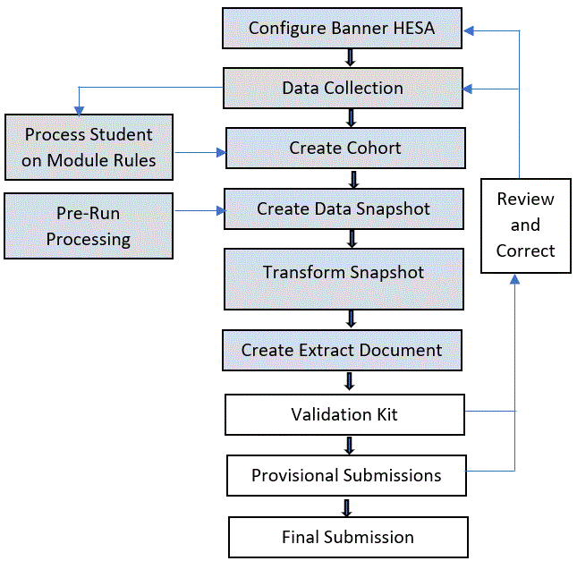

HESA Student Collection
This HESA Student Collection Use content provides information for producing your HESA returns for the Student and Aggregate Offshore (AO) collections using the Banner HESA module. It includes details about using the Banner Mass Data Update Utility (MDUU) for processing these returns.
Student and Aggregate Offshore Student Collections Returns
To comply with HESA requirements, the HESA module supports the delivery of returns for the Student Collection and the Aggregate Offshore Collection in XML.
The module uses MDUU processing activities to generate the cohort, snapshot, and extract data and the XML documents for the return. Seed data for use in MDUU is delivered with each release to enable you to design or customise your return processing.
To understand how the returns are built, you must understand the process, task, and activity elements of MDUU. Refer to the Banner Mass Data Update Utility Use for a complete explanation of tasks and activities, and how these elements work to support Student Collections reporting requirements.
- Process - represents a set of tasks sharing a common business area. The MDUU security allows you to associate users and user classes to a given process. If this functionality is activated, only users assigned to a given process will be able to execute this process.
- Task - a set of activities that is carried out as part of a process, such as creating a Student Collections cohort or taking a snapshot of data from the original datasources and gathering them in more synthetic (eventually generated) tables.
- Activity - a processing element that is carried out as part of a task, such as a stage in cohort creation, a data copy, or a data transformation. An activity updates a single table and can be reused in several tasks.

HESA Student return process trees
The ESC_HST and ESC_HSRT process trees that are involved with the HESA release.
ESC_HST
Institutions can use the ESC_HST process tree for HESA Student return until the year 2015/16.
Refer to the Banner HESA Use content to know more about the ESC_HST process tree information.
ESC_HSRT
Institutions can use the ESC_HSRT process tree for the HESA Student return for the year 2016/17 onwards.
Student data collection
For the student data collection, users must manage student registrations and collect and record supplemental data.
Student registration
Use the Student Priority on Course (SKAHREG) page to view the association between a student course registration and the curriculum priority. This is the data that has been processed using this Student-on-Module processing described in Student on Module Processing.
The SKAHREG form allows you to see existing associations that have been made between a student instance and Banner course registrations. The SKAHREG page also allows you to create new associations or deactivate existing associations. These associations are generated by the activities in the ESC_HSO process described in the Student on Module Processing section.
- Activate a student instance-registration association
- Deactivate a student instance-registration association
Activate a student instance-registration association
You can activate a student instance/registration association for one or more students by accessing the Student Priority on Course (SKAHREG) page.
Procedure
Deactivate a student instance-registration association
You can deactivate a student instance/registration association for one or more students by accessing the Student Priority on Course (SKAHREG) page.
Procedure
Supplemental data updates
Enter or update supplemental data as required.
Some supplemental data is likely to be already present in the student record (for example, as a result of capturing data from UCAS during the admissions cycle).
When recording supplemental data, it is worth noting that, in some cases, the HESA processing allows data to be collected at different levels to help minimise the recording of duplicate data. For example the commencement date can be held against a specific program and will then be used for all students on that program. However, if an individual student on that program has a different commencement date, it can be recorded against the student. The HESA Extract process will use the date recorded against the student if it exists, otherwise it will use the date against the program.
LOV data is generated for these forms from the HESA XML Schema Definition for the appropriate data collection and year using the ESC_HSD_LOV process tree.
Supplemental person information
Use the Supplemental General Person Information (SKASPIN) page to enter or update general student information (for example, nationality).
This page displays supplemental person information that has been either received from the UCAS process, entered manually, or has been generated by the HESA Pre-Run Processing (described in the corresponding resources for Student Pre-Run Processing).
Student instance information
Use the Student Instance Supplementary Data (SKAHINS) page to enter the data associated with a student instance number.
Instance mobility information
Use the HESA Instance Mobility Information (SKAHMOB) page to enter data about student mobility experiences.
The Scheme, Location, Mobility, and Duration fields are used for HESA reporting. The other fields are for institutional use. The HESA reporting activities will, if necessary, aggregate mobility data for the same scheme and location but at different times. Mobility experience records that are not required for HESA processing will not be returned to HESA. For example, those that take place within the U.K. or those that are less than four weeks duration.
Application data
Use the Supplemental Applicant Information (SKASAIN) page to enter application data (for example, domicile, occupation of parent or student, previous degree).
This page displays supplemental information that has been created during the applicant's admission to the institution, using data imported from UCAS or directly entered in the SKASAIN page (refer to the Banner UCAS Use content for more information.)
Program of study (HESA course) information
Use the Supplemental Program Information (SKASPRI) page to enter program of study information (such as level, source of funding, cost centres, fees, and mode of study).
HESA provides an explicit definition of a course. Banner HESA allows a HESA course to be represented by either a Banner program or a combination of Banner program and first major. A defaulting mechanism is implemented in the snapshot and extract processing that allows a family of programs/majors to be represented by a single Supplemental Program record. However, if characteristics differ for a single course within that family, a Supplemental record can be created specifically for that program/major combination.
Program year information
Use the Supplemental Program Mode Year (SKAPMYR) page to enter programme information for a given year (for example, proportion not taught at the institution).
Program commencement date information
Use the Commencement Date Repeating (SKACOMD) page to enter program commencement date information.
Module information
Use the Supplemental Course Information (SKASCIN) page to enter HESA module and subject area data. The page also enables you to enter multiple cost centres per course.
Instance engagement information
Use the HESA Instance Engagement Information (SKAHIEN) page to enter and store the student instance details against which you want to store the engagement information.
- Apprenticeship Standards students, to store engagement details
- Financial information of the employer for apprenticeship standards
- Learner Delivery Funding and Monitoring (DELFAM) details
- Learner Funding and Monitoring (FAM) details
- Learner employment status details.
Student on Module Processing
This process is provided as an interim solution to Concurrent Curriculum Processing that is planned for a future release of Banner HESA.
You can create records that will associate Banner course registrations (SFRSTCR) with programme data (SORLCUR). If you have study path functionality enabled, you do not need to run any of the activities for this interim solution because the association between instance data and courses in registration is maintained using the study path.
This is required only for the Student return.
You will need to run this process periodically to ensure that student-on-module data is maintained as registrations change. The data is used by the Registration stage of cohort processing (ESC_HSRT_COHORT2); therefore, you need to run the Student-on-Module processing before you run ESC_HSRT_COHORT2. If you use this data for other local processing you might want to run the process more frequently. You can run it as a cron job or execute it from a form or table trigger. Refer to the Banner Mass Data Update Utility Use content for more information about the gkkpsql.API_ExecuteRuleset API, which is used for executing this rule set.
- Create student-on-module data
- Define the column mappings for the student-on-module processing
- Define the rules to populate the student-on-module data for a set of modules
- Initialise the student-on-module data for a set of modules
- Populate the student-on-module data for a set of modules
- Increment the student-on-module data for a set of modules (add records without refreshing the student-on-module data from scratch).
HESA Student on Module Activity Data
This activity matches registration level with curriculum data based on Banner level code using the most recent active learner curriculum record to find the curriculum level.
- Reduce the population of records considered to improve the performance
- Implement rule logic to meet local business requirements, for example, that some post-graduate students may take undergraduate courses.
| Activity | ESC_SO_ACTIVITY |
| Source Tables | SFRSTCR SKBHINS SORLCUR STVRSTS |
| Target Table | SKRHPOC |
Post cohort activity data
This activity can be used to reduce the time taken for student-on-module processing by restricting the population to a particular cohort.
You can use the cohort processing methods based on Population Target and Instance before using ESC_HSO_POST_COHORT to process student on module data only for records included in the cohort. (Alternatively, you can use the ESC_HSO_ACTIVITY (or your locally modified versions) and ESC_HSRT_COHORT2. For more information, see Student Cohort - Registration Data.)
The ESC_HSO_POST_COHORT process ignores rolled grades because this data is needed only for incomplete (non-rolled) courses.
The following table provides details about this activity.
| Activity | ESC_HSO_POST_COHORT |
| Source Tables | SFRSTCR SKBHINS SKRHCOH SORLCUR STVRSTS |
| Target Table | SKRHPOC |
Student Cohort Processing
Use Cohort Processing to refresh or update a cohort for a HESA reporting period. This is functionally equivalent to the existing cohort process.
- Academic History
- Registration
- Enrolment
- Graduation
- Instance data
- HIN (population) targetNote: To process the HIN target file, you must register the HIN target as an external table and define the HUSID and OWNSTU fields.
- Create a cohort
- Define the column mappings for the cohort processing
- Define the rules to populate the cohort
- Initialise the cohort
- Populate the cohort
- Increment the cohort (add records without refreshing the cohort from scratch).
If you are using study paths, use the Student Cohort - Study Path Data and the Student Cohort - HIN Target Data activities. If you are not using study paths, use the other activities.
More information about all of these processing activities can be found in the spreadsheet HESAnnnnnn_process.xls that is provided with the release.
You can use the HESA Cohort (SKAHCOH) page to view and maintain HESA cohort data manually. If you mark a record as Inactive, it will not be updated by subsequent cohort population activities; however, it will be removed if the cohort is purged.
Records are included only if the student instance or program records match the return type in the cohort record (SKBHMPD).
Records that are already in the cohort are ignored; this means that a record already in the cohort will not be updated.
HESA MDUU Activity - Cohort Purge Data
This activity purges the cohort for a cohort code and term code combination.
Activity Details
| Activity | ESC_HSRT_COHORT_PURGE |
| Source Tables | DUAL |
| Target Table | SKRHCOH |
Student Cohort - Academic History Data
This activity matches academic history and instance records and finds the matching program record.
- Matches academic history records (SHRTCKN) to the program (SHRDGMR) using applied indicators (SHRTCKD).
- Matches to the instance record (SKBHINS) using curriculum records (SORLCUR).
- Finds the matching program record (SKRSPRI) based on program/major.
The following table provides details about this activity.
| Activity | ESC_HSRT_COHORT1 |
| Source Tables | SHRDGMR SHRTCKD SHRTCKN SKBHINS SKBHMPD SKRSPRI SKVHPRM SORLCUR SORLFOS |
| Target Table | SKRHCOH |
Student Cohort - Registration Data
This activity matches registrations records, finds registration dates, matches instance data, and finds matching program records.
- Matches registrations records (SFRSTCR) and curriculum data (SORLCUR) using student-on-module (SKRHPOC).
- Matches to the CRN (SSBSECT) to find the registration dates.
- Matches to the instance data (SKVHSTU and SKBHINS).
- Finds the matching program record or program/major record (SKVHPRM).
The following table provides details about this activity.
| Activity | ESC_HSRT_COHORT2 |
| Source Tables | SFRSTCR SKBHINS SKBHMPD SKRHPOC SKVHPRM SKVHSTU SSBSECT |
| Target Table | SKRHCOH |
- Continue to use the this activity to use registration data to populate your cohort. In this case you should use the ESC_HSO_ACTIVITY or your local variation of it to populate the SKRHPOC table before generating the cohort data. This means that you will be using the student-on-module data for processing the cohort and for reporting incomplete (un-rolled registrations).
- Disable this activity and use the ESC_HSO_POST_COHORT activity to process student on module data after you have build the cohort. This means that you will be using the student-on-module data for reporting incomplete (un-rolled) registrations.
Student Cohort - Graduation Data
This activity finds the instance (SKBHINS) and matching HESA course records (SKRSPRI).
Activity Details
| Activity | ESC_HSRT_COHORT3 |
| Source Tables | SKBHINS SKBHMPD SKVHPRM SKVHSTU |
| Target Table | SKRHCOH |
Student Cohort - Enrolment Data
This activity finds the instance (SKBHINS) and matching HESA course records (SKRSPRI). The activity applies a filter to exclude records that do not have an enrolment record (SFBETRM) with enrolment dates within the reporting period.
The following table provides details about this activity.
| Activity | ESC_HSRT_COHORT4 |
| Source Tables | SKBHINS SKBHMPD SKVHPRM SKVHSTU |
| Target Table | SKRHCOH |
Student Cohort - Study Path Data
This activity processes student instances in the cohort for which the enrolment status on the Study Path Enrolment (SFRENSP) table indicates that the student has enrolled for the particular study path.
You can combine this cohort processing activity with the Student Cohort - Population Target Data (ESC_HSRT_COHORT5) activity to process the complete cohort. The remaining cohort processing activities are not needed if you are using study paths. You should not use this processing activity unless you have enabled study paths and carried out the migration processing.
The following table provides details about this activity.
| Activity | ESC_HSRT_COHORT_ENRO_SP |
| Source Tables | SFRENSP SKBHINS SKBHMPD SKVHPRM SKVHSTU STVESTS |
| Target Table | SKRHCOH |
Student Cohort - HIN Target Data
This activity matches the HIN record to the instance record (SKBHINS) using OWNSTU and NUMHUS.SKRHINT_EXT is an Oracle external table referencing the HESA HIN Target list (population target file). The external table can be defined using the Execution Tree Set-up (GKAPEXS) page.
You can choose to use this activity to populate the HIN target based on the flat file HIN target list, or you can use the processing task described in the Student Cohort - HESA HIN Target File section to use the XML version of the HIN target document along with the exception reporting tasks.
The following table provides details about this activity.
| Activity | ESC_HSRT_COHORT5 |
| Source Tables | SKBHINS SKRHINT_EXT SPRIDEN |
| Target Table | SKRHCOH |
HESA MDUU Activities - Student Instance Cohort Data
The activities find instance records that match the cohort record (SKBHMPD) and finds instance records (SKBHINS).
- Newly admitted students (comdate is within the reporting period).
- Students returning from dormancy (comdate before the reporting period but instance not ended).
- Instances that are active but not ended (or ended within the reporting period).
The following table provides details about this activity.
| Activity | ESC_HSRT_CHRT_INSTANCE |
| Source Tables | SKBHINS SKBHMPD SKVHPRM SKVHSTU |
| Target Table | SKRHCOH |
This activity provides an alternative method for populating the cohort based on instance records (SKBHINS). It also allows for the ESC_HSO_POST_COHORT activity to process student-on-module data for only the cohort.
The following table provides details about this activity.
| Activity | ESC_HSRT_CHRT_INS_PURGE |
| Source Tables | SKRHCOH SKBHINS SKRSPRI SKVHSTU SKBHMPD |
| Target Table | SKRHCOH |
This activity finds active instances and removes them from cohort when the field PROGTYPE will be set to 25 and ILR Generation is set to 1.
Student Cohort - HESA HIN Target File
This activity adds cohort rows for all records in the SKRHCXS table that have a matching instance record (SKBHINS).
The following table provides details about this activity.
| Activity | ESC_HSRT_CHRT_HINT |
| Source Tables | SKBHINS SKRHCXS |
| Target Table | SKRHCOH |
Student Cohort - Load HESA HIN Target XML
This activity uses the SKKHXST.FN_LOAD_SKRHCXS function to parse the XML HIN target file. One row in SKAHCOH is written for every row in the XML document. The function also use the SKRHCXS_OWNSTU value to find a matching SPRIDEN identification record to populate SKRHCXS_PIDM.
- Register the HIN target using the script using the hesa_hin_tarl_xmlreg.sql script provided with the HESA 8.3.3 release.
- Obtain the HIN target XML document from the HESA.
- Place the HIN target in an Oracle-enabled directory.
- For this activity, values will be inserted into the SKRHCXS table from an XML file without referencing an XSD file. This activity will only process HIN Target XML file from the 2014/15 student return. HIN Target XML files from previous student returns can no longer be imported.
| Activity | ESC_HSRT_CHRT_HIN_XML |
| Source Tables | DUAL |
| Target Table | SKRHCXS |
Student Cohort - HIN Target Exception - unmatched person ID
This activity populates the exception reporting table with any records for which there is not a match between the OWNSTU value in the XML document and a Banner ID. You can use the MDUU Universal View (GKAPUNV) page to view the exception records for the target table.
The following table provides details about this activity.
| Activity | ESC_HSRT_CHRT_HIN_E1 |
| Source Tables | SKRHCXS |
| Target Table | SKRHDE1 |
Student Cohort - HIN Target Exception - unmatched HUSID
This activity populates the exception reporting table with any records for which a matching identification record has been found but the HUSID in the HIN target differs from the HUSID in the HESA person record (SKASPIN).
You can use the MDUU Universal Viewer (GKAPUNV) page to view the exception records for the target table.
The following table provides details about this activity.
| Activity | ESC_HSRT_CHRT_HIN_E2 |
| Source Tables | SKBSPIN SKRHCXS |
| Target Table | SKRHDE1 |
Student Cohort - HIN Target Exception - unmatched SKBHINS
This activity populates the exception reporting table with any records for which a matching identification record has been found but the NUMHUS in the HIN target does not exist in the HESA Instance (SKBHINS) table.
You can use the MDUU Universal Viewer (GKAPUNV) page to view the exception records for the target table.
The following table provides details about this activity.
| Activity | ESC_HSRT_CHRT_HIN_E3 |
| Source Tables | SKRHCXS |
| Target Table | SKRHDE1 |
Student Cohort - HIN Target Exception table SKRHDE1
This activity purges the exception table for the specified cohort and term.
The following table provides details about this activity.
| Activity | ESC_HSRT_CHRT_HIN_EX_PU |
| Source Tables | SKRHDE1 |
| Target Table | SKRHDE1 |
Student Pre-run Processing
This process populates Supplemental Student Instance Data (SKBHINS/SKRHINS) for a cohort in preparation for HESA reporting.
The delivered solution is functionally equivalent to the existing pre-run process (SKPHPRE), however it will no longer include any Student Instance Identifier (NUMHUS) processing, because this is now carried out by the triggers on the SORLCUR table.
- Create a HUSID (HESA unique student identifier) if it does not already exist in SKBPSIN_HUSID
- Create a new, empty instance year record (SKRHINS) if one does not exist for the current year
- Update the year of programme based on the value of the previous year of programme and the value of the NOTACT (Suspension of Active Studies) indicator
- Update the year of student by counting the number of active year records for the instance.
You can include additional functionality to meet your specific local processing needs, for example, to replicate existing prior pre-run and post pre-run processing.
- Perform pre-run processing
- Define the column mappings for the pre-run processing
- Define the rules to update columns during pre-run processing
- Process the pre-run data for a reporting cohort, including creating year of programme, year of student, and HUSID.
More information about all of these processing activities can be found in the HESAnnnnnn_process.xls that is provided with the release.
You can use the HESA Cohort (SKAHCOH) page to view and maintain HESA cohort data manually. If you mark a record as Inactive, it will not be updated by subsequent cohort population activities; however, it will be removed if the cohort is purged.
Records are included only if the student instance or program records match the return type in the cohort record (SKBHMPD).
Records that are already in the cohort are ignored; this means that a record already in the cohort will not be updated.
Student Return - Pre-Run 1 (HUSID) Data
This activity finds records and creates a new identifier for each active instance in the cohort.
- Finds person records (SKBPSIN) that do not have a HUSID and identification records (SPRIDEN) that match the cohort record
- Finds the term code record (STVTERM) for the cohort term
- HESA
- Creates a new HUSID (HESA Unique Student Identifier) in SKBSPIN.
| Activity | ESC_HSRT_PRERUN1 |
| Source Tables | SKBHSYS SKBSPIN SKRHCOH SPRIDEN STVTERM |
| Target Table | SKBSPIN |
Student Return - Pre-Run 2 (SKRHINS) Data
This activity creates a new row in SKRHINS, if one does not already exist, for each active record in the cohort.
The following table provides details about this activity.
| Activity | ESC_HSRT_PRERUN2 |
| Source Tables | SKBHINS SKRHCOH |
| Target Table | SKRHINS |
Student Return - Pre-Run 3 (YEARPRG, YEARSTU) Data
This activity finds all SKRHINS that are active in the cohort when YEAPRG or YEARSTU is null. It then increments the YEARPRG from the most recent SKRHINS record and sets the YEARSTU based on the number of active SKRHINS records.
The following table provides details about this activity.
| Activity | ESC_HSRT_PRERUN3 |
| Source Tables | SKBHINS SKRHCOH SKRHINS |
| Target Table | SKRHINS |
Student Pre-run SSN
This activity populates the Student SSN from the Banner SLC module for each active Student in the cohort. Records are selected for processing only if there is an SLC Support record (RKRSSLC) and if the record is include in the HESA coverage as defined on the HESA website.
The ESC_HSRT_PRERUN_SSN_STU activity migrates the SSN number from SLC for each student, so that the data is available for reporting against the Student.
The following table provides details about this activity.
| Activity | ESC_HSRT_PRERUN_SSN_STU |
| Source Tables | SKBSPIN RKBEXID SKRHCOH |
| Target Table | SKBSPIN |
Student Return Pre-run FEEREGIME
This activity populates the FEEREGIME field based on the general student or curriculum rate code or admit term for each active instance in the cohort. This should normally be carried out before the fee calculation in ESC_HSRT_PRERUN_FEE to prevent all fees being calculated needlessly.
The following table provides details about this activity.
| Activity | ESC_HSRT_PRERUN_FEEREG |
| Source Tables | SGBSTDN SKBHINS SKRHCOH SKVHSTU SORLCUR |
| Target Table | SKBHINS |
Student Return Pre-run Fee Calculation
The activities that you can use for student return pre-run fee calculations.
- ESC_HSRT_PRERUN_FEE, which calculates the fees for all students
- ESC_HSRT_PRERUN_FEE_WD, which recalculates the fees students that withdraw from or interrupt their studies
These activities populate the NETFEE and GROSSFEE column values from Banner Accounts Receivable for active instance records in the cohorts for which a FEEREGIME value is not populated. Institutions that do not use Banner Accounts Receivable or that have some students whose charges and payments are not processed through Banner Accounts Receivable must make local arrangements for this.
The gross fee (SKRHINS_GROSFEE) and net fee (SKRHINS_NETFEE) are calculated using the sum of the amount (TBRACCD_AMOUNT) for selected rows from the Account Charge/Payment Detail Table (TBRACCD). You must specify the desired criteria on the HESA Student System Data Maintenance (SKASSDT) page, as shown in the following table. If none of these rows are defined on SKASSDT, the activities do nothing.
| Entity | Attribute | Option 1 | Note |
|---|---|---|---|
| Rows to calculate gross fee (SKRHINS_GROSFEE) | |||
| ESC_HESA | GROSSFEE_DCAT | Category code | Zero, one, or more category code rows can be present. |
| ESC_HESA | GROSSFEE_DETAIL | Detail code | Zero, one, or more detail code rows can be present. |
| ESC_HESA | GROSSFEE_SRCE | Source code | Zero, one, or more source code rows can be present. |
| Rows to calculate net fee (SKRHINS_NETFEE) | |||
| ESC_HESA | NETFEE_DCAT | Category code | Zero, one, or more category code rows can be present. |
| ESC_HESA | NETFEE_DETAIL | Detail code | Zero, one, or more detail code rows can be present. |
| ESC_HESA | NETFEE_SRCE | Source code | Zero, one, or more source code rows can be present. |
- Transactions that match the PIDM and term code for the instance record are included
- Transactions that match the SKASSDT rows for category codes are included. If there are no SKVSSDT rows for category codes, all category codes are included.
- Transactions that match the SKASSDT rows for detail codes are included. If there are no SKVSSDT rows for detail codes, all detail codes are included.
- Transactions that match the SKASSDT rows for source codes are included. If there are no SKVSSDT rows for source codes, all source codes are included.
Only date-effective, active, un-terminated SKASSDT rows are considered.
The following table provides details about the ESC_HSRT_PRERUN_FEE activity, which calculates the fees for all students.
| Activity | ESC_HSRT_PRERUN_FEE |
| Source Tables | SKBHINS SKRHCOH SKRHINS TBRACCD |
| Target Table | SKRHINS |
The following table provides details about the ESC_HSRT_PRERUN_FEE_WD activity, which recalculates the fees for students that withdraw from or interrupt their studies.
| Activity | ESC_HSRT_PRERUN_FEE_WD |
| Source Tables | SFBETRM SKBHINS SKRHCOH SKRHINS STVESTS TBRACCD |
| Target Table | SKRHINS |
Student Return - Dormant
This activity sets REDUCEDI to 04 for all instances where MODE is 63 or 64 and FTE is 0 or null for each active instance in the cohort. This will allow the post-extract activities to set all non-mandatory fields for the reduced instance return to null.
The following table provides details about this activity.
| Activity | ESC_HSRT_PRERUN_DORMANT |
| Source Tables | SKBHINS SKRHCOH SKRHINS |
| Target Table | SKBHINS |
Student Return – Pre-run (ILRSWSUPAIMID) Data
This activity generates ILR Software Supplier Aim Identifier (ILRSWSUPAIMID) for each student instance.
| Activity | ESC_HSRT_PRERUN_AIM_ID |
| SourceTables | SKBHINS SKRHCOH |
| Target Table | SKBHINS |
Student Snapshot and Extract Processing
This chapter discusses the HESA Student Collection processing details.
Snapshot processing
Snapshot Processing populates snapshot data from baseline tables, European Solution Centre localisation tables, locally developed tables, and tables from third-party applications.
The task allows selected target tables in the snapshot data structure to be populated. It has the capability to refresh (remove and insert) or update (add new rows and update existing rows) the snapshot.
Snapshot tables are owned by the PRGNREP schema.
When running the snapshot you can select which tasks and activities to run and, therefore, which snapshot tables to populate. You can also purge the selected snapshot tables before re-inserting rows.
- Create snapshot data
- Define the column mappings for the snapshot
- Define the rules to generate the snapshot population
- Initialise the snapshot
- Populate the snapshot
- Increment the snapshot (add / remove records without refreshing the snapshot from scratch).
You can use the MDUU Universal View (GKAPUNV) form to view and maintain snapshot data.
Extract processing
Extract Processing populates the extract based on snapshot data. The task allows selected target tables in the extract data structure to be populated. It has the capability to refresh (remove and insert) or update (add new rows and update existing rows) into the extract.
A generic mapping API has been provided to supplement the existing mapping functionality provided by SKASSDT/SKVSSDT. The SKKHEXF.FN_VALUEMAP value mapping function has been provided to support value transformations between internal and external (for example, HESA) values. Extract data tables are all owned by the PRGNREP schema.
- Create extract data
- Define the column mappings for the extract
- Define the rules to generate the extract population
- Use expressions, or functions, or both to derive values based on the contents of the snapshot
- Check if the ILRGEN indicator is set and exclude fields that are not required for the production of the ILR (Individualised Learner Record).
- Initialise the extract
- Populate the extract
- Increment the extract (add records without refreshing the cohort from scratch).
See the Student Extract Processing Functions section for detailed information about the functions.
You can use the MDUU Universal View (GKAPUNV) page to view and maintain extract data.
Non-modular - cohort processing
The requirement to provide Student-on-Module Data for non-modular processing is delivered by a template solution which is delivered as part of the HESA Student return and is described in the following sections.
No specific requirements have been identified. It is assumed that Cohort processing based on Banner enrollment records (SFBETRM) records and Population Target Processing will be sufficient. If necessary, you can add cohort processing based on the Student Instance Supplemental data (SKBHINS) provided by the ESC_HSRT_CHRT_INSTANCE activity.
Non-modular snapshot processing
The following template snapshot activities have been provided in a separate task (ESC_HSRT_SNA_NM)
- ESC_HSRT_SNA_NONMOD
- ESC_HSRT_SNA_NONMOD_SUB
ESC_HSRT_SNA_NONMOD
This activity creates student-on-module snapshot rows (SKRHSSM) for non-modular students. The main source of data is the Student Curriculum (SORLCUR).
The module ID is generated by concatenating each student’s program, the pipe character ‘|’, and the student major code. It is assumed that the set of program and major codes are distinct from the set of subject code/course numbers to avoid a ‘clash of codes’.
A course reference number (CRN) of XX is generated to allow these non-modular module registrations to be easily identified in the snapshot.
The snapshot selects students for non-modular processing by the level of the program of study (SORLCUR_LEVL_CODE). The levels assumed to be included are PG, PT, and PR. Clients must valid this assumption and change the record selection criteria if required.
ESC_HSRT_SNA_NONMOD_SUB
This activity creates module subject snapshot rows (SKRHSMS) for programs containing non-modular students. The main source of data is the HESA Supplemental Program (course) Cost Centre data (SKRCCTR).
The module ID is generated by concatenating the cost centre program, the pipe character ‘|’. and major code. The convention is that a null major code represents a wild card for all students on this program (except where a specific major cost centre is identified). Where the cost centre major code is null this is snapshot as an ‘x’. This allows the MDUU auto-populate logic to check for existing rows when determining whether to insert or update.
All cost centre rows are snapshot for Banner level codes PG, PT, and PR.
These activities populate target tables that are also populated by other activities. Care must be taken when using the purge functionality to ensure that rows inserted by other activities are not purged in error.
Non-modular extract processing
The following template extract activities have been provided in a separate task (ESC_HSRT_EXT_NM)
- ESC_HSRT_EXT_MOD_NON
- ESC_HSRT_EXT_STU_NMO
- ESC_HSRT_EXT_MOD_NON_SB
ESC_HSRT_EXT_MOD_NON
This activity creates module extract rows (SKRHEMO) from the non-modular student-on-module snapshot data (SKRHSSM). Data from the instance (SKRHSIS), instance year (SKRHSIY), course (SKRHSCO), course mode (SKRHSCM) and course year (SKRHSCY) are also used.
Modules are created only for those non-modular registrations in the module snapshot data (SKRHSSM).
The module ID is generated from the program and major code separated by the pipe character ‘|’. This assumes that the ‘module’ characteristics are identical across program modes and years. If this assumption does not hold, separate modules by mode-year will be needed, and this must be reflected in the extract for the student-on-module and module-subject-data.
Non-modular registrations are identified by the CRN XX.
If the student mode is not given on the student instance year (SKRHSIY) or student instance (SKRHSIS) snapshot, the lowest available student mode is assumed from the course mode snapshot (SKRHSCM).
Data such as the amount of credit are obtained from the course mode and year snapshot records.
ESC_HSRT_EXT_STU_NMO
This activity creates student-on-module extract rows (SKRHESM) from the non modular rows in the student-on-module snapshot (SKRHSSM).
Non-modular registrations are identified by the CRN XX.
ESC_HSRT_EXT_MOD_NON_SB
This activity creates the module subject extract records (SKHREMS) from the module subject snapshot (SKRHSMS) and the matching non-modular registrations (SKRHSSM).
These activities populate target tables that are also populated by other activities. Care must be taken when using the purge functionality to ensure that rows inserted by other activities are not purged in error.
Snapshot and extract activities for the ESC_HSRT process
This section provides the details for the snapshot and extract activities associated with them for the ESC_HSRT process.
Institution Data
The following table describes the snapshot and extract processing activities for the Institution entity.
| Snapshot Activity | Tables | ESC_HSRT_SNA_REPORT |
|---|---|---|
| Finds the UK Provider Reference Number (UKPRN) and cohort details. | Source Tables | SKBHMPD SKBHSYS |
| Target Table | SKRHSRE | |
| Extract Activity | Source Table | ESC_HSRT_EXT_INSTIT |
| Finds the institution record in the report snapshot using the cohort and term code. | SKRHSRE | |
| Target Table | SKRHEIT |
Course Data
The following table describes the snapshot and extract processing activities for the Course entity.
| Snapshot | Activity | ESC_HSRT_SNA_COURSE |
|---|---|---|
| Finds the effective program and major records using SKVHPRM and SKRPSRI. | Source Tables | SKBHMPD SKRSPRI SKVHPRM SMRPRLE |
| Target Table | SKRHSCO | |
| Extract | Activity | ESC_HSRT_EXT_COURSE |
| Finds records from the snapshot for the current cohort/term combination that exists in the student/instance snapshot (SKRHSIS) and matching course snapshot (SKRHSCO). | Source Table | SKRHSCO SKRHSIS |
| Target Table | SKRHECO |
Award Body Data
The following table describes the snapshot and extract processing activities for the Award Body entity.
| Snapshot | Activity | ESC_HSRT_SNA_COURSE_AWB |
|---|---|---|
| Finds the Awarding Body (AWARDBOD) data associated with the HESA Course. | Source Tables | SKBHMPD SKRSPAB SKRSPRI |
| Target Table | SKRHSCA | |
| Extract | Activity | ESC_HSRT_EXT_COURSE_AWB |
| Creates AWARDBOD records from the snapshot records. | Source Table | SKRHSCS SKRHSIS |
| Target Table | SKRHECA |
Course Subject Data
The following table describes the snapshot and extract processing activities for the Course Subject entity.
Snapshot Processing
| Activity Name | Source Tables | Target Tables | Description |
|---|---|---|---|
| ESC_HSRT_SNA_COURSE_SUB | SKRHSCS SKRHSIS |
SKRHECS | Finds course subject records from the student/instance snapshot (SKRHSIS) and the matching rows in the course subject snapshot (SKSHSCS) for either the matching program and major or the matching program for any major. |
| ESC_HSRT_SNA_CS_HECOS | SKRSPRI SKRSPSB SKVHPRM SKBHMPD SKVHPSB |
SKRHSCS | Captures and supports the HECOS information for the course subject. |
Extract Processing
| Activity Name | Source Tables | Target Tables | Description |
|---|---|---|---|
| ESC_HSRT_EXT_COURSE_SUB | SKBHMPD SKRSPRI SKRSPSB SKVHPRM SKVHPSB |
SKRHSCS | Finds records from the snapshot for the current cohort/term combination that exists in the student/instance snapshot (SKRHSIS) and matching course snapshot (SKRHSCO). |
Delivery Organisation and Location Data
The following table describes the snapshot and extract processing activities for the Delivery Organisation and Location entity.
Snapshot Processing
| Activity Name | Source Tables | Target Tables | Description |
|---|---|---|---|
|
ESC_HSRT_SNA_COURSE_DOL |
SKRSPRI SORDOLO SKBHMPD |
SORHSCD | Captures the Course Delivery Organisation and Location details of HESA Student Return. |
Extract Processing
| Activity Name | Source Tables | Target Tables | Description |
|---|---|---|---|
| ESC_HSRT_EXT_COURSE_DOL | SORHSCD SKRHSIS |
SORHECD | Extracts the Course Delivery Organisation and Location details of HESA Student Return. |
Module Data
The following table describes the snapshot and extract processing activities for the Module entity.
| Snapshot | Activity | ESC_HSRT_SNA_MODULE |
|---|---|---|
| Finds Banner course start and end records (SCBCRKY) for the cohort period, the matching Banner course data (SCBCRSE), and the matching HESA module data (SKBSCIN). | Source Tables | SCBCRKY SCBCRSE SKBSCIN STVTERM |
| Target Table | SKRHSMO | |
| Extract | Activity | ESC_HSRT_EXT_MODULE |
| Finds the most recent module snapshot for the current cohort and term that are included in the student on module (SKRHSSM) or student on module outcome (SKRHSSO) snapshot. | Source Table | SKRHSMO |
| Target Table | SKRHEMO |
Module Subject Data
The following table describes the snapshot and extract processing activities for the Module entity.
Snapshot Processing
| Activity Name | Source Tables | Target Tables | Description |
|---|---|---|---|
| ESC_HSRT_SNA_MOD_SUBJ | SCBCRKY SCBCRSE SKRSCIN STVTERM |
SKRHSMS | Finds Banner course start and end records (SCBCRKY) for the cohort period, the matching Banner course data (SCBCRSE), and the matching HESA module data (SKBSCIN). |
| ESC_HSRT_SNA_MS_HECOS | SKRSCIN SCBCRKY |
SKRHSMS | Captures and supports the HECOS information for the module subject. |
Export Processing
| Activity Name | Source Tables | Target Tables | Description |
|---|---|---|---|
| ESC_HSRT_EXT_MOD_SUBJ | SKRHSMS | SKRHEMS | Finds module subjects for the current cohort and term that are included in the student on module (SKRHSSM) or student on module outcome (SKRHSSO) snapshot. |
Student Data
The following table describes the snapshot and extract processing activities for the Student entity.
| Snapshot | Activity | ESC_HSRT_SNA_ADDRESS |
|---|---|---|
| Finds all the addresses for the reporting period for each person in the cohort. | Source Tables | SKBHMPD SKRHCOH SPRADDR SPRIDEN |
| Target Table | SKRHSAD | |
| Snapshot | Activity | ESC_HSRT_SNA_STU_EMAIL |
| Finds ID (SPRIDEN) records and all active email addresses (GOREMAL) depending on the email code set for current term and cohort. | Source Tables | SKBHMPD SKRHCOH SPRIDEN |
| Target Table | SKRHSEM | |
| Snapshot | Activity | ESC_HSRT_SNA_DISABILITY |
| Finds the ID (SPRIDEN) and disability records (SGRDISA) for active students in the cohort. | Source Tables | SGRDISA SKRHCOH SPRIDEN |
| Target Table | SKRHSDI | |
| Snapshot | Activity | ESC_HSRT_SNA_INST_YR |
| Finds the most recent term-effective instance year record (SKRHINS) that matches the cohort. | Source Tables | SKBHINS SKRHCOH SKRHINS SPRIDEN |
| Target Table | SKRHSIY | |
| Snapshot | Activity | ESC_HSRT_SNA_MEDICAL |
| Finds identification (SPRIDEN) and medical information (SPRMEDI) for active records in the cohort. | Source Tables | SKRHCOH SPRIDEN SPRMEDI |
| Target Table | SKRHSME | |
| Snapshot | Activity | ESC_HSRT_SNA_STUDENT |
| Finds person records (SPBPERS) and ID records (SPRIDEN) that match the active cohort records. | Source Tables | SKBSPIN SKRHCOH SPBPERS SPRIDEN |
| Target Table | SKRHSST | |
| Extract | Activity | ESC_HSRT_EXT_STUDENT ESC_HSRT_EXT_STU201718 (for academic year 2017/18) |
| Finds student (SKRHSST) for the cohort period and the most recent matching instance year record (SKRHSIY). It is possible for a student to have two active instances in the snapshot. This join finds the most recent (highest) instance (NUMHUS). |
Source Table | SKBHMPD SKRHSIY SKRHSST |
| Target Table | SKRHEST |
Student Contact Preference Data
The following table describes the snapshot and extract processing activities for Student's contact preference entity.
CONTPREFTYPE = RUI and CONTPREFCODE = 4 value, then, only the RUI4 record will be returned as contact preference. If the student is deceased, then, only the CONTPREFTYPE = RUI and CONTPREFCODE = 5 value will be returned as contact preference.(For England users only).| Snapshot | Activity | ESC_HSRT_SNA_STU_COPR |
|---|---|---|
| Finds ID (SPRIDEN) records and contact preference records (SKRHSCP) for active students in the cohort. | Source Tables | SPRIDEN SKBHMPD SKRHCOH SKRHSCP |
| Target Table | SKRHSPC | |
| Extract | Activity | ESC_HSRT_EXT_STU_COPR |
| Creates student (SKRHSPC) extract data for matching student (SKRHSST) and report (SKRHSRE) for the current term and cohort. | Source Tables | SKRHSPC SKRHSRE GKBKSYS SKRHSST |
| Target Table | SKRHEPC |
Instance Data
The following table describes the snapshot and extract processing activities for the Instance entity.
- ESC_HSRT_SNA_INSTANCE is used if study paths are not in effect.
- ESC_HSRT_SNA_INST_SP is used if study paths are in effect.
Snapshot Processing
| Activity Name | Source Tables | Target Tables | Description |
|---|---|---|---|
| ESC_HSRT_SNA_CONTRACT | SPRIDEN TBBCPRF TBBCSTU |
SKRHSCN | Finds contract assignments for active students in the cohort. |
| ESC_HSRT_SNA_INSTANCE ESC_HSRT_SNA_INST_SP |
SGBSTDN SKBHINS SKRHCOH SKVHSTU SORLCUR SPRIDEN |
SKRHSIS | Finds the cohort (SKRHCOH), ID (SPRIDEN), general learner (SGBSTDN) term header (SHRTTRM), and instance (SKBHINS) records that match the SKVHSTU view. |
| ESC_HSRT_SNA_INST_YR | SKBHINS SKRHCOH SKRHINS SPRIDEN |
SKRHSIY | Finds the most recent term-effective instance year record (SKRHINS) that matches the cohort. |
Extract Processing
| Activity Name | Source Tables | Target Tables | Description |
|---|---|---|---|
| ESC_HSRT_EXT_INSTANCE | SKBHMPD SKRHSCM SKRHSCO SKRHSCY SKRHSIS SKRHSIY SKRHSST |
SKRHEIS | Finds the matching instance (SKRHSIS), instance year (SKRHSIY), student/person (SKRHSST), course (SKRHSCO) course mode (SKRHSCM), and course year (SKRHSCY) records that match the current cohort record (SKBHPMD). |
| ESC_HSRT_EXT_INST201920 | SKBHMPD SKRHSCM SKRHSCO SKRHSCY SKRHSIS SKRHSIY SKRHSST |
SKRHEIS | Removes the condition to check the PROGTYPE and ILRGEN data elements. |
| ESC_HSRT_EXT_INST202021 | SKRHSIS SKRHSIY SKRHSST SKRHSCO SKRHSCM SKRHSCY SKBHMPD |
SKRHEIS | Extracts the 2020-21 Instance changes of HESA Student Return. |
Instance Financial Support Data
The following table describes the snapshot and extract processing activities for the Instance.FinancialSupport entity.
| Snapshot | Activity | ESC_HSRT_SNA_INST_FS |
|---|---|---|
| Finds the Instance Financial Support data for instances in the cohort for the academic year of the reporting period. | Source Tables | SKRHCOH SKRHFIS SPRIDEN |
| Target Table | SKRHSFS | |
| Extract | Activity | ESC_HSRT_EXT_INST_FS |
| Creates extract data by mapping the FINTYPE codes from internal codes to HESA values (if necessary) and summing the amounts where necessary. | Source Tables | SKRHSFS SKRHSIS SKRHSST |
| Target Table | SKRHEFS |
Instance Mobility Data
The following table describes the snapshot and extract processing activities for the Instance.Mobility entity.
| Snapshot | Activity | ESC_HSRT_SNA_INST_MB |
|---|---|---|
| Finds the Instance Mobility data for instances in the cohort for the academic year of the reporting period. | Source Tables | SKRHCOH SKRHMOB SPRIDEN |
| Target Table | SKRHSMB | |
| Extract | Activity | ESC_HSRT_EXT_INST_MB |
| Creates extract data by mapping the FINTYPE codes from internal codes to HESA values (if necessary) and summing the amounts where necessary. | Source Tables | SKRHSIS SKRHSIY SKRHSMB SKRHSST |
| Target Table | SKRHEMB |
Engagement Data
The following table describes the snapshot and extract processing activities for the Engagement entity. (For England users only).
| Snapshot | Activity | ESC_HSRT_SNA_ENGAGE |
|---|---|---|
| Finds instances (SKBHINS) and engagement records (SKRHIEN) for active students in the cohort. | Source Tables | SKRHCOH SKBHMPD SKRHIEN SKBHINS |
| Target Table | SKRHSEN | |
| Extract | Activity | ESC_HSRT_EXT_ENGAGE |
| Finds student (SKRHSEN) for matching student instance (SKRHSIS) and report (SKRHSRE) for the current term and cohort. | Source Tables | SKRHSIS SKRHSIY SKRHSMB SKRHSST |
| Target Table | SKRHEMB |
Apprentice Finance Data
The following table describes the snapshot and extract processing activities for the Apprentice Finance entity. (For England users only).
| Snapshot | Activity | ESC_HSRT_SNA_APFIN |
|---|---|---|
| Finds instances (SKBHINS) and apprentice finance records (SKRHIAF) for active students in the cohort. | Source Tables | SKRHCOH SKBHMPD SKRHIAF SKBHINS |
| Target Table | SKRHSAF | |
| Extract | Activity | ESC_HSRT_EXT_APFIN |
| Creates extract student data (SKRHSEN) for matching student instance (SKRHSIS) and report (SKRHSRE) for the current term and cohort. | Source Tables | GKBKSYS SKRHSAF SKRHSIS SKRHSRE |
| Target Table | SKRHEAF |
Learner Employment Data
The following table describes the snapshot and extract processing activities for the Learner Employment entity. (For England users only).
| Snapshot | Activity | ESC_HSRT_SNA_LEMP |
|---|---|---|
| Finds instances (SKBHINS) and employment records (SKRHILE) for active students in the cohort. | Source Tables | SKRHCOH SKBHMPD SKRHIAF SKBHINS |
| Target Table | SKRHSAF | |
| Extract | Activity | ESC_HSRT_EXT_LEMP |
| Creates extract student data for (SKRHSES) for matching student instance (SKRHSIS) and report (SKRHSRE) for the current term and cohort. | Source Tables | GKBKSYS SKRHSAF SKRHSIS SKRHSRE |
| Target Table | SKRHEAF |
Learner Funding and Monitoring Data
The following table describes the snapshot and extract processing activities for the Learner Funding and Monitoring entity. (For England users only).
| Snapshot | Activity | ESC_HSRT_SNA_LFM |
|---|---|---|
| Finds instances (SKBHINS) and funding records (SKRHIFM) for active students in the cohort. | Source Tables | SKRHCOH SKBHMPD SKBHINS SKRHIFM |
| Target Table | SKRHSMF | |
| Extract | Activity | ESC_HSRT_EXT_LFM |
| Creates extract student data for (SKRHSMF) for matching student instance (SKRHSIS) for the current term and cohort. | Source Tables | SKRHSMF SKRHSIS GKBKSYS |
| Target Table | SKRHEMF |
Learner Delivery Funding and Monitoring Data
The following table describes the snapshot and extract processing activities for the Learner Delivery Funding and Monitoring entity. (For England users only).
| Snapshot | Activity | ESC_HSRT_SNA_LDFM |
|---|---|---|
| Finds instances (SKBHINS) and delivery funding records (SKRHDFM) for active students in the cohort. | Source Tables | SKRHCOH SKBHINS SKRHDFM |
| Target Table | SKRHSFM | |
| Extract | Activity | ESC_HSRT_EXT_LDFM |
| Creates extract student (SKRHSFM) data for matching student instance (SKRHSIS) for the current term and cohort. | Source Tables | SKRHSMF SKRHSIS GKBKSYS |
| Target Table | SKRHEMF |
Learning Delivery Work Placement Data
The following table describes the snapshot and extract processing activities for the Learning Delivery Work Placement entity (For England users only).
| Snapshot | Activity | ESC_HSRT_SNA_LDWP |
|---|---|---|
| Finds instances (SKBHINS) and work placement records (SKRHDWP) for active students in the cohort. | Source Tables | SKBHINS SKRHDWP SKRHCOH |
| Target Table | SKRHSWP | |
| Extract | Activity | ESC_HSRT_EXT_LDWP |
| Creates extract work placement data (SKRHDWP) for matching student instance (SKRHSIS) for the current term and cohort. | Source Table | SKRHSWP GKBKSYS SKRHSIS |
| Target Table | SKRHEWP |
Entry Profile Data
The following table describes the snapshot and extract processing activities for the Entry Profile entity.
| Snapshot | Activity | ESC_HSRT_SNA_ENTRY_PROF |
|---|---|---|
| Finds ID (SPRIDEN) records and instance records (SKBHINS) that are active in the cohort. | Source Tables | SKBHINS SKBHMPD SKRHCOH SPRIDEN |
| Target Table | SKRHSEP | |
| Captures and support up-to five occurrences or entry for the HECoS codes for the entry profile data. | Activity | ESC_HSRT_SNA_EP_HECOS |
| Source Table | SKBHINS SKRHCOH SPRIDEN SKRSAIN SKBSPIN |
|
| Target Table | SKRHSEP | |
| Extract | Activity | ESC_HSRT_EXT_ENTRY_PROF |
| Finds the matching student instance (SKRHSIS) and entry profile (SKRHSEP) records for the current term and cohort. | Source Table | SKBHMPD SKRHSCO SKRHSEP SKRHSIS SKRHSST |
| Target Table | SKRHEEP |
Learner Contact Data
The following table describes extract processing activity for the Learner Contact Data entity.
| Extract | Activity | ESC_HSRT_EXT_LCO |
|---|---|---|
| Finds the address details (SKRHSAD), Current postcode (SKRHSEP), email associated (SKRHSEM) and report (SKRHSRE) for each person in the cohort. | Source Table | SKRHSAD SKRHSRE GKBKSYS |
| Target Table | SKRHELC |
Qualifications on Entry Data
The following table describes the snapshot and extract processing activities for the Qualifications on Entry entity.
| Snapshot | Activity | ESC_HSRT_SNA_QUAL_ENT |
|---|---|---|
| Finds instance records (SKBHINS) that are active in the cohort (SKRHCOH) with matching records for the Qualent table (SKRQUAL). | Source Tables | SKBHINS SKRHCOH SPRIDEN SKRQUAL |
| Target Table | SKRHSQE | |
| Extract | Activity | ESC_HSRT_EXT_QUAL_ENT |
| Finds the matching student instance (SKRHSIS) and entry profile (SKRHSQE) records for the current term and cohort. | Source Table | SKBHMPD SKRHSEP SKRHSIS SKRHSQE SKRHSST |
| Target Table | SKRHEQE |
Qualifications Awarded Data
The following table describes the snapshot and extract processing activities for the Qualifications on Entry entity.
- ESC_HSRT_SNA_QUAL_AWARD and ESC_HSRT_EXT_QUAL_AWARD are used if study paths are not in effect.
- ESC_HSRT_SNA_QUAL_AW_SP and ESC_HSRT_EXT_QUAL_AW_SP are used if study paths are in effect.
Snapshot Activities ESC_HSRT_SNA_QUAL_AWARD ESC_HSRT_SNA_QUAL_AW_SP
Finds matching identification (SPRIDEN), instance (SKBHINS), learner record (SORLCUR), outcome (SORLCUR), and degree record (SHRDGMR) for records in the cohort. Records are returned only if the degree record has been awarded. Source Tables SHRDGIH SHRDGMR
SKBHINS
SKRHCOH
SORLCUR
SORLFOS
SPRIDEN
STVDEGS
Target Table SKRHSQA Extract Activities ESC_HSRT_EXT_QUAL_AWARD ESC_HSRT_EXT_QUAL_AW_SP
Finds the matching student (SKRHSST), instance (SKRHSIS), and qualification (SKRHSQA) snapshot records for the current cohort. Source Table SKRHSIS SKRHSQA
SKRHSST
Target Table SKRHEQA
Student Placement Data
The following table describes the snapshot and extract processing activities for student's ITT Placement entity.
| Snapshot | Activity | ESC_HSRT_SNA_PLMNT |
|---|---|---|
| Finds Instance year (SKRHINS) and placement records (SKRPLMN) for active students in the cohort. | Source Tables | SKRHCOH SKRHINS SKRPLMN |
| Target Table | SKRHSRD | |
| Extract | Activity | ESC_HSRT_EXT_PLMNT |
| Creates extract student (SKRHSPL) data for matching student instances (SKRHSIS) for the current term and cohort. | Source Table | SKRHSPL SKRHSIS GKBKSYS |
| Target Table | SKRHEPL |
RAE Data
The following table describes the snapshot and extract processing activities for the RAE entity.
| Snapshot | Activity | ESC_HSRT_SNA_RAE |
|---|---|---|
| Finds data for the current cohort (SKRHCOH), matching ID (SPRIDEN), and RAE data (SKRHRAE). | Source Tables | SKRHCOH SKRHRAE SPRIDEN |
| Target Table | SKRHSRD | |
| Extract | Activity | ESC_HSRT_EXT_RAE |
| Finds the RAE rows (SKRHSRD) and matching student (SKRHSST) records for the current reporting period. | Source Table | SKRHSRD SKRHSST |
| Target Table | SKRHERD |
Student on Module Data
The following table describes the snapshot and extract processing activities for the Student on Module entity.
- ESC_HSRT_SNA_STU_MOD and ESC_HSRT_SNA_MODOUT are used if study paths are not in effect.
- ESC_HSRT_SNA_STU_MOD_SP and ESC_HSRT_SNA_MODOUT_SP are used if study paths are in effect.
Snapshot Activities ESC_HSRT_SNA_STU_MOD ESC_HSRT_SNA_STU_MOD_SP
Finds matching identification (SPRIDEN), instance (SKBHINS), and student-on-module (SKRHPOC) for non-rolled registration records that match the cohort. Source Tables SFRSTCR SKBHINS
SKRHCOH
SKRHPOC
SPRIDEN
SSBSECT
Target Table SKRHSSM Snapshot Activities ESC_HSRT_SNA_MODOUT ESC_HSRT_SNA_MODOUT_SP
Finds the matching instance (SKBHINS), curriculum (SKVHSTU) and cohort records, locates the matching degree records (SHRDGMR) by program and major, and finds the credit records using the applied credit table (SHRTCKD). Source Tables SHRDGMR SHRGRDE
SHRGRDO
SHRTCKD
SHRTCKG
SHRTCKL
SHRTCKN
SKBHINS
SKRHCOH
SKVHSTU
SPRIDEN
Target Table SKRHSSO Extract Activity ESC_HSRT_EXT_STU_MOD Finds matching student on module (SKRHSSM), student instance year (SKRHSIY), and student (SKRHSST) snapshot data for the reporting period academic year. It excludes rows that have matching entries in module outcome (SKRHSMO) records from the snapshot, to avoid extracting registrations where grades have been rolled to academic history. Source Table SKRHSIY SKRHSSM
SKRHSST
Target Table SKRHESM
Non-modular
This section describes the snapshot and extract processing activities for the non-modular processing
These activities are provided to allow you to return Instance.StudentonModule data for students that are on non-modular programmes. The activities are based on extracting the module data from the student course (Banner program).
If desired, you can create ‘dummy’ modules for these students. Alternatively, you might not have any non-modular students. In these cases, this processing can be ignored.
Non-Modular Student Module Data
The following table describes the snapshot and extract processing activities for the non-modular information processing.
- ESC_HSRT_SNA_NONMOD is used if study paths are not in effect.
- ESC_HSRT_SNA_NONMOD_SP is used if study paths are in effect.
Snapshot Activities ESC_HSRT_SNA_NONMOD ESC_HSRT__HSRT_SNA_NONMOD_SP
Finds active instances (SKBHINS) in the cohort (SKRHCOH), matching learner curriculum (SORLCUR), and field of study (SORLFOS) records. Records are returned for Banner level codes PR and PT.
Source Tables SKBHINS SKBHMPD
SKRHCOH
SORLCUR
SORLFOS
SPRIDEN
Target Table SKRHSSM Extract Activity ESC_HSRT_EXT_STU_NMO Finds matching student on module outcome (SKRHSSO) and student (SKRHSST) snapshot data for the reporting period academic year. Source Table SKRHSSM SKRHSST
Target Table SKRHESM
Non-Modular Module Data
The following table describes the snapshot and extract processing activities for the non-modular student processing.
| Snapshot | Activity | ESC_HSRT_SNA_NONMOD |
|---|---|---|
| Finds active instances (SKBHINS) in the cohort (SKRHCOH), matching learner curriculum (SORLCUR), and field of study (SORLFOS) records. | Source Tables | SKBHINS SKBHMPD SKRHCOH SORLCUR SORLFOS SPRIDEN |
| Target Table | SKRHSSM | |
| Extract | Activity | ESC_HSRT_EXT_MOD_NON |
| Finds non-modular student on module snapshot rows (SKRHSSM) and the matching course and course year snapshot rows. This assumes a single mode and year for these non-modular courses (or that the credit values are the same for all mode / years. Also finds the course year record SKRHSCY (for credit information) using the mode on student instance (SKRHSIS) record and the year of programme on the student instance year (SKRHSIY) record. |
Source Table | SKRHSCM SKRHSCO SKRHSCY SKRHSIS SKRHSIY SKRHSSM |
| Target Table | SKRHEMO |
Module Course Information for Non-Modular Student Data
The following table describes the snapshot and extract processing activities for module course information for non-modular students.
| Snapshot | Activity | ESC_HSRT_SNA_COURSE |
|---|---|---|
| Finds the effective program and major records using SKVHPRM and SKRPSRI. | Source Tables | SKBHMPD SKRSPRI SKVHPRM SMRPRLE |
| Target Table | SKRHSCO | |
| Extract | Activity | ESC_HSRT_EXT_MOD_NON |
| Finds non-modular student on module snapshot rows (SKRHSSM) and the matching course and course year snapshot rows. This assumes a single mode and year for these non-modular courses (or that the credit values are the same for all mode / years. Also finds the course year record SKRHSCY (for credit information) using the mode on student instance (SKRHSIS) record and the year of programme on the student instance year (SKRHSIY) record. |
Source Table | SKRHSCM SKRHSCO SKRHSCY SKRHSIS SKRHSIY SKRHSSM |
| Target Table | SKRHEMO |
Non-Modular Subject Data
The following table describes the processing activities for non-modular subject.
Snapshot Processing
| Activity Name | Source Tables | Target Tables | Description |
|---|---|---|---|
| ESC_HSRT_SNA_NONMOD_SUB | SKBHMPD SKRCCTR SMRPRLE |
SKRHSMS | Finds the term-effective rows for course cost centers (SKRCCTR) to use for the non-modular extract processing. |
| ESC_HSRT_SNA_NMS_HECOS | SKRCCTR SKBHMPD SMRPRLE |
SKRHSMS | Captures and supports HECOS information for the module subject of the Cost Centre window. |
Extract Processing
| Activity Name | Source Tables | Target Tables | Description |
|---|---|---|---|
| ESC_HSRT_EXT_MOD_NON_SB | SKRHSCO SKRHSMS SKRHSSM |
SKRHEMS | Finds the non-modular registration and the matching course snapshot records and the matching non-modular module subject and cost centers. |
Other snapshot activities
The following activities were created for old versions of Banner HESA and are no longer required by delivered extract activities, but have been retained in the system as you might find them useful.
- Attributes from History Information
- External ID Information
- Transactions Information
- Registration Attributes
These snapshot activities do not have associated extract activities.
Attributes from History Information
The following table describes the snapshot activity for attributes from history processing.
| Snapshot | Activity | ESC_HSRT_SNA_ATTR_HIST |
|---|---|---|
| Finds academic history course attributes that are used for the reporting period. | Source Tables | SHRATTC SHRTCKN |
| Target Table | SKRHSAH |
External ID Information
The following table describes the snapshot activity for SLC external IDs.
| Snapshot | Activity | ESC_HSRT_SNA_EXTERNAL_ID |
|---|---|---|
| Snapshots the SLC SSN. | Source Tables | RKBEXID SKRHCOH SPRIDEN |
| Target Table | SKRHSEI |
Transactions Information
The following table describes the snapshot activity for accounting transactions.
| Snapshot | Activity | ESC_HSRT_SNA_TRANS |
|---|---|---|
| Finds ID (SPRIDEN) and transaction (TBRACCD) records that match the active cohort records for the reporting period. | Source Tables | SKRHCOH SPRIDEN STVTERM TBRACCD |
| Target Table | SKRHSTR |
Registration Attributes
The following table describes the snapshot activity for registration attributes.
| Snapshot | Activity | ESC_HSRT_SNA_ATTR_REG |
|---|---|---|
| Finds registration course attributes associated with active students in the cohort. | Source Tables | SFRSTCR SSRATTR |
| Target Table | SKRHSAR |
Nonessential snapshot data
Snapshot processing is designed to snapshot data that you want to use in the extract process.
- Not source tables in extract processing
- Not used in the delivered functions in the database packages SKKHEXF
- Not used in sub-queries in extract processing.
- ESC_HSRT_SNA_ATTR_HIST, HESA Student Snapshot Attributes from History
- ESC_HSRT_SNA_ATTR_REG, HESA Student Snapshot Attributes from Registration
- ESC_HSRT_SNA_EXTERNAL_ID, HESA Student Snapshot External IDs
- ESC_HSRT_SNA_TRANS, HESA Student Snapshot Transactions
The following is a template SQL statement to generate this information:
SELECT gkrpatt_acti_code, gkvpact_desc, gkrpatt_table_name
FROM gkrpatt, gkvpact
WHERE gkvpact_acti_code = gkrpatt_acti_code
/* Select target tables that appear in a snapshot activity but are not a source for an extract table
*/
AND gkrpatt_table_name IN (SELECT gkrpatt_table_name
FROM gkrpatt
WHERE SUBSTR (gkrpatt_acti_code, 1, 11) = 'ESC_HSRT_SNA'
MINUS
SELECT gkrpaso_synonymname
FROM gkrpaso
WHERE SUBSTR (gkrpaso_acti_code, 1, 11) = 'ESC_HSRT_EXT')
/* Exlcude target tables that are referenced in the delivered extract functions in SKKHEXF
*/
AND NOT EXISTS (SELECT 1
FROM sys.dba_source
WHERE name = 'SKKHEXF' AND UPPER (text) LIKE '%' || gkrpatt_table_name || '%')
/* Exclude target tables that are referenced in extract source columns
*/
AND NOT EXISTS
(SELECT 1
FROM gkrpats
WHERE SUBSTR (gkrpats_acti_code, 1, 11) = 'ESC_HSRT_EXT'
AND INSTR (TO_CHAR(gkrpats_sourceselect), gkrpatt_table_name) <> 0);
Student Post-extract Processing
Post-extract processing is used to implement HESA coverage and business rules, such as implementing the coverage requirements of the FEEREGIME by setting the value to null for instances that are not included in the coverage. The export process ignores any such null fields.
Student Return Post Extract FEEREGIME Data
This activity identifies all instance data for which the FEEREGIME should not be exported.
The following table provides details about this activity.
| Activity Name | Source Tables | Target Tables |
|---|---|---|
| ESC_HSRT_PEX_FEEREGIME | GKBKSYS SKBHMPD SKRHECO SKRHEIS |
SKRHEIS |
| ESC_HSRT_PEX_FEER201920 (Removes the condition to check the PROGTYPE data element). | GKBKSYS SKBHMPD SKRHECO SKRHEIS |
SKRHEIS |
| ESC_HSRT_PEX_FEER202021 (Incorporates 2020-21 coverage criteria for FEEREGIME field of HESA Student Return). | GKBKSYS SKBHMPD SKRHECO SKRHEIS |
SKRHEIS |
Student Return Post Extract Fee Data
This activity identifies all instance data for which the FEE should not be exported because the SLC SSN has a value. This is carried out regardless of the country parameter.
If your institution wants to export both the SLC SSN and the fee amounts, you must disable this activity.
The following table provides details about this activity.
| Activity Name | Source Tables | Target Tables |
|---|---|---|
| ESC_HSRT_PEX_FEE | SKRHEIS | SKRHEIS |
| ESC_HSRT_PEX_FEE_202021 (Incorporates 2020-21 coverage criteria for GROSSFEE and NETFEE fields of HESA Student Return). | GKBKSYS SKBHMPD SKRHECO SKRHEIS |
SKRHEIS |
Student Return Post Extract Dormant Student
This activity sets all non-mandatory fields for the student (assuming that all the student's instance are 04) to NULL for records where REDUCEDI = 04.
The following table provides details about this activity.
| Activity Name | Source Tables | Target Tables |
|---|---|---|
| ESC_HSRT_PEX_DORM_STU | SKRHEIS SKRHEST |
SKRHEST |
| ESC_HSRT_PEX_DSTU202021 | SKRHEST SKRHEIS |
SKRHEST |
Student Return Post Extract Dormant Instance
This activity sets all non-mandatory fields for the student (assuming that all the student's instance are 04) and the instance to NULL for records where REDUCEDI = 04.
The following table provides details about this activity.
| Activity Name | Source Tables | Target Tables |
|---|---|---|
| ESC_HSRT_PEX_DORM_INST | GKBKSYS SKRHEIS |
SKRHEIS |
| ESC_HSRT_PEX_DINS202021 | GKBKSYS SKRHEIS |
SKRHEIS |
Student Return Post Extract ITT Placement
This activity removes ITT placement records for student instances where REDUCEDI = 04.
The following table provides details about this activity.
| Activity | ESC_HSRT_PEX_ITTPLMNT |
| Source Tables | SKRHEIS SKRHEPL |
| Target Table | SKRHEPL |
Student Return Post Extract AWARDBOD
This activity creates a default AWARDBOD row for every HESA course in the extract that does not already have an AWARDBOD row. The value for the AWARDBOD row is taken from the UKPRN system parameter.
| Activity | ESC_HSRT_PEX_AWARDBOD |
| Source Tables | GKBKSYS SKRHECO |
| Target Table | SKRHECA |
Student Return Post Extract CARELEAVER
This activity identifies the EntryProfile entity where the CARELEAVER value should not be exported.
- QR.EntryProfile.CARELEAVER.5
- QR.EntryProfile.CARELEAVER.7
The following table provides details about this activity.
| Activity Name | Source Tables | Target Tables |
|---|---|---|
| ESC_HSRT_PEX_CARELEAVER | GKBKSYS SKRHECO SKRHEEP SKRHEIS |
SKRHEEP |
| ESC_HSRT_PEX_CLVR202021 | GKBKSYS SKRHECO SKRHEEP SKRHEIS |
SKRHEEP |
| ESC_HSRT_PEX_CLVR202122 | GKBKSYS SKRHECO SKRHEEP SKRHEIS |
SKRHEEP |
Student Return Post Extract ELQ
This activity identifies the EntryProfile entity where the ELQ value should not be exported.
- QR.Instance.ELQ.2
- QR.Instance.ELQ.3
The following table provides details about this activity.
| Activity | ESC_HSRT_PEX_ELQ |
| Source Tables | GKBKSYS SKRHECO SKRHEIS |
| Target Table | SKRHEIS |
Export the Student XML Document
The final stage of HESA reporting is to export the data to an external document. This process provides a mapping between the HESA XML document schemas and the extract data.
To optimise processing of the Student Return this process exports the student data in chunks. The size of each chunk is defined in the SKAHSYS parameter ESC_HSRT_EXP_EXPORT_SET_SIZE (default value 1000). The number of chunks to be processed is created by copying the processing activity ESC_HSRT_EXP_STUDENTSET in the Execution Tree Set-up Form (GKAPEXS) the appropriate number of times. For example, if you expect 35,324 students, you will need 36 copies of this activity in the task. If you increase the parameter size, you will need fewer copies, but each will process more slowly. Testing has shown 1,000 to be a reasonable number to prevent excessive processing, but you can experiment with different values to find out what works best at your institution.
This process allows you to export the extract data to an XML document for validation outside of Banner using the HESA validation kit. You may use the MDUU Universal View Form (GKAPUNV) to view and export the XML document.
Refer to The dup_prgn_acts.sql script section for a SQL script to create the number of copies of ESC_HSRT_EXP_STUDENTSET that are needed to process your entire set of students.
The ESC_HSRT_EXP_EXPORT activity is no longer supported, so it is not described here.
Purge the Export Document Records
This activity purges SKRHEXM records previously created by the export process. This is used at the start of the task to remove data from previous executions, and then later in the task to remove the set of student rows after they have been aggregated.
The following table provides details about this activity.
| Activity | ESC_HSRT_EXP_PURGE |
| Source Tables | DUAL |
| Target Table | SKRHEXM |
Export Courses and Modules
The activities start the export by exporting the courses and modules.
The following table provides details about the activities.
| Activity | ESC_HSRT_EXP_START ESC_HSRT_EXP_STRT201718 (for the academic year 2017/18) ESC_HSRT_EXP_STRT201920 (for the academic year 2019/20) ESC_HSRT_EXP_STRT202021 (for the academic year 2020/21) |
| Source Tables | SKRHEIT GKBKSYS |
| Target Table | SKRHEXM |
Export set of students
The activities export a set of students. The number of students exported is defined by the HESA ESC_HSRT_EXP_EXPORT_SET_SIZE system parameter, which has a default value of 1000.
| Activity | ESC_HSRT_EXP_STUDENTSET ESC_HSRT_EXP_STU201718 (for the academic year 2017/18) ESC_HSRT_EXP_STU201819 (for the academic year 2018/19) ESC_HSRT_EXP_STU201920 (for the academic year 2019/20) ESC_HSRT_EXP_STU202021 (for the academic y ear 2020/21) ESC_HSRT_EXP_STU202122 (for the academic y ear 2021/22) |
| Source Tables | DUAL GKBKSYS |
| Target Table | SKRHEXM |
Export Closing Tags for XML Document
Gather Data for the XML Document
This activity gathers the data and end tags of the XML from SKRHEXM into one file.
The following table provides details about this activity.
| Activity | ESC_HSRT_EXP_SAVE_FILE |
| Source Tables | DUAL |
| Target Table | SKRHEXM |
Load File to Document Table
This activity loads the XML file into SKRHEXM.
The following table provides details about this activity.
| Activity | ESC_HSRT_EXP_SAVETOCLOB |
| Source Tables | DUAL |
| Target Table | SKRHEXM |
Aggregate Offshore Data Collection
The Aggregate Offshore Collection (previously called the Student Aggregate Overseas Collection) uses the same data supplementary data as the Student Collection, in particular the course aim of the program from the HESA Supplemental Program Information (SKASPRI) page and the campus or site code from the General Learner record.
Aggregate Offshore Cohort Processing
The page you can use for aggregate offshore cohort processing and the records that this processing includes.
You can use the HESA Cohort (SKAHCOH) page to view and maintain HESA cohort data manually. If you mark a record as Inactive, it will not be updated by subsequent cohort population activities. However, it will be removed if the cohort is purged.
Records are included only if the student instance or program records match the return type in the cohort record (SKBHMPD).
Records that are already in the cohort are ignored. This means that a record already in the cohort will not be updated.
Student Aggregate Offshore - Cohort 1 Data (By Program)
This activity uses the views SKVHSTU and SKVHPRM.
- Find the matching program on the curriculum record (SORLCUR).
- Find the matching major on the field of study record (SORLFOS).
- Use the program and major to find the matching supplemental program information (SKRSPRI).
The following table provides details about this activity.
| Activity | ESC_HSA_CHRT1 |
| Source Tables | SKBHINS SKBHMPD SKVHPRM SKVHSTU SORLCUR SORLFOS |
| Target Table | SKRHCOH |
Student Aggregate Offshore - Cohort 2 Data (By Locsdy)
This activity finds matching instance records with the instance year records, if they exist, and finds the current cohort reference data.
The following table provides details about this activity.
| Activity | ESC_HSA_CHRT2 |
| Source Tables | SKBHINS SKBHMPD SKRHINS |
| Target Table | SKRHCOH |
Aggregate Offshore Snapshot and Extract Processing
This processing consists of the provision data, extract institution data, and snapshot course data activities.
Student Aggregate Offshore - Provision Data
The snapshot and extract processing activities for the Provision entity.
| Snapshot | Activity | ESC_HSA_SNA_PROV |
|---|---|---|
Does the following:
|
Source Tables | SGBSTDN SKBHINS SKRHCOH SKVHSTU SORLCUR SORLFOS SPRIDEN |
| Target Table | SKRHSPR | |
| Extract | Activity | ESC_HSA_EXT_PROV |
| Matches provision (SKRHSPR) to course (SKRHSCO) using program and major. | Source Tables | SKRHSCO SKRHSPR |
| Target Table | SKRHEPR |
Student Aggregate Offshore - Extract Institution Data
The extract activity for institutions. There is no associated snapshot activity.
| Extract | Activity | ESC_HSA_EXT_INST |
|---|---|---|
| Matches cohort reference (SKBHMPD) by cohort and term. | Source Tables | SKBHMPD SKBHSYS |
| Target Table | SKRHEIT |
Student Aggregate Offshore - Snapshot Course Data
The snapshot activity for courses. There is no associated extract activity.
| Snapshot | Activity | ESC_HSA_SNA_COURSE |
|---|---|---|
| Matches cohort reference (SKBHMPD) by cohort and term. | Source Tables | SKBHINS SKBHMPD SKRHCOH SKRSPRI SKVHPRM SKVHSTU |
| Target Table | SKRHSCO |
The Aggregate Offshore XML Document
The final stage of HESA reporting is to export the data to an external document. This process provides a mapping between the HESA XML document schemas and the extract data.
This process allows you to export the extract data to an XML document for validation outside of Banner using the HESA validation kit. You can use the MDUU Universal View (GKAPUNV) page to view and export the XML document.
Student Aggregate Offshore - Export Data
This activity produces the XML document from the data in the extract tables.
The following table provides details about this activity.
| Activity Name | Source Tables | Target Tables | Description |
|---|---|---|---|
| ESC_HSA_EXPORT1 | SKRHEIT | SKRHEXM | Exports the data collected from the extract tables to produce an XML document. |
| ESC_HSA_EXP201920 | SKRHEIT GKBKSYS | SKRHEXM | Supports the HESA Aggregate Offshore 2019/20 (C19052 version 1.0). Supports the Dormant, Withdrawn, Completed, and Continuing head count returns for England and Wales regions. This activity also supports the total head counts for Northern Ireland and Scotland regions. |
Student Extract Processing Functions
All delivered MDUU activities to support HESA processing have been provided as template solutions for clients to configure to meet your specific local requirements.
It has not been possible to identify generic requirements for value mapping between internal values and the HESA values for extract processing. You must identify these value mapping requirements and update the relevant extract source definitions to include a call to the value mapping SKKHEXF.FN_VALUEMAP API.
The following SQL functions, which are contained in the SKKHEXF package and replace similar functionality, have been included to support HESA Student extract processing.
FN_VALUEMAP
Use field_name to identify a mapping definition in SKRUFDS_FIELD_NAME. The Value is the value to look up the field referenced in SKRUFDS_MAP_FROM_FIELD.
- Returns the value named in SKRUFDS_DESCR_FIELD for the row found.
- Returns NULL if no row is found.
- Raises an exception if multiple rows are found.
- Return value if no mapping definition is found in SKRUFDS.
- Find the definition in SKRUFDS for the HESA_COUNTRY logical mapping'
- Generate a SQL statement including the logic as:
Select SKVSSDT_SDAT_CODE_OPT_2 from SKVSSDT, SKRUFDS Where SKRUFDS_FIELD_NAME = 'HESA_COUNTRY' And SKVSSDT_SDAT_CODE_ENTITY = SKRUFDS_SSDT_ENTITY And SKVSSDT_SDAT_CODE_ATTR= SKRUFDS_SSDT_ATTR And SKVSSDT_SDAT_CODE_OPT1 = 'AD' . . .This assumes that the SKRUFDS definition for HESA_COUNTRY specifies:
SKRUFDS_MAP_FROM_FIELD = SKVSSDT_CODE_OPT_1 SKRUFDS_DESC_FIELD = SKVSSDT_CODE_OPT_2
FN_VALUEMAP
This function is used for field_name, value, and date. Use similar logic to the version above. In addition, it allows for date effective mapping against SVKSSDT by comparing the date parameter with SKVSSDT_EFF_DATE and SKVSSDT_TERM_DATE.
FN_HUSID_CHECK_DIGIT
Calculate and returns the check digit for a HUSID using the HESA logic described on the HESA website. This replaces the obsolete FN_CALC_CHECK_DIGIT in the obsolete SKAHEXS_PKG package.
The HUSID is a 13-character field; the right-most character is the checksum.
The input parameter for this function is the left-most 12 characters of a HUSID. The result is the single character check digit.
Calculation of check digit
The check digit is calculated using the first 12 digits and provides a means of detecting errors of transcription.
To calculate the check digit, each of the first 12 digits is multiplied by a weight which depends on its position in the number, and the resulting products added. The check digit is then obtained by subtracting the final digit of the resulting sum from ten.
If the final digit of the sum of the products is 0, the check digit would be the final digit after the subtraction, for example, 10 - 0 = 10, so the check digit is 0.
This table describes the weights this calculation uses.
| Position | Weight |
|---|---|
| 1 | 1 |
| 2 | 3 |
| 3 | 7 |
| 4 | 9 |
| 5 | 1 |
| 6 | 3 |
| 7 | 7 |
| 8 | 9 |
| 9 | 1 |
| 10 | 3 |
| 11 | 7 |
| 12 | 9 |
| Number | Weight | Product |
|---|---|---|
| 0 | 1 | 0 |
| 7 | 3 | 21 |
| 1 | 7 | 7 |
| 0 | 9 | 0 |
| 6 | 1 | 6 |
| 4 | 3 | 12 |
| 1 | 7 | 7 |
| 2 | 9 | 18 |
| 3 | 1 | 3 |
| 4 | 3 | 12 |
| 5 | 7 | 35 |
| 6 | 9 | 54 |
For example, in October 2007 a student enters your university and is allocated the internal number 123456. The check digit calculation for the students reference number, 071064123456, would be calculated as:
The sum of the products is 175, the final digit being 5, so the check digit is 10 - 5, or 5. The full identifier, therefore, is 0710641234565.
Detailed specification
If length of husid parameter value < 12
Raise an error and return null
IF any character in the husid parameter value is non-numeric
Raise an error and return null
FOR charnum in 1 to 12 LOOP
IF charnum in 1, 5 or 9
Set product_sum = product sum + to_number(substr(husid,charnum,1))
ELSIF charnum in 2, 6 or 10
Set product_sum = product sum + (to_number(substr(husid,charnum,1)) * 3)
ELSIF charnum in 3, 7 or 11
Set product_sum = product sum + (to_number(substr(husid,charnum,1)) * 7)
ELSE
Set product_sum = product sum + (to_number(substr(husid,charnum,1)) * 9)
END IF
END LOOP
Last_digit = to_number(substr(to_char(product_sum), length(to_char(product_sum)),1))
Check_digit = substr(to_char(10-last_digit),length(to_char(10-last_digit)),1)
Return check_digit
FN_POSTCODE
The function returns NULL if the postcode fails the validation test and Postcode if the postcode passes validation.
Validate the postcode based on a regular expression held as a parameter in SKBHSYS
The parameter must be provided as SKBHSYS seed data as shown in the following table.
| Column | Value |
|---|---|
| SKBHSYS_PARAM_NAME | POST CODE PATTERN |
| SKBHSYS_VALUE | (GIR 0AA)|((([A-Z-[QVX]][0-9][0-9]?)|(([A-Z-[QVX]][A-Z-[IJZ]][0-9][0-9]?)|(([A-Z-[QVX]][0-9][A-HJKSTUW])|([A-Z-[QVX]][A-Z-[IJZ]][0-9][ABEHMNPRVWXY])))) [0-9][A-Z-[CIKMOV]]{2}) |
| SKBHSYS_NOTE | Schemas provided by the institution |
| SSKBHSYS_DESCRIPTION | Postcode regular expression |
| SKBHSYS_RESTRICTED_VALUE | N |
| SSKBHSYS_SYSTEM | N |
FN_DISABLE
This function uses pidm, cohort, and term. Use the first non-null value from medical code (SKRHSME) or disability code (SKRHSME_DISA). Making use of the Primary Disability Indicator (SKRHSME_PRIMARY_IND), if multiple exist return 08 Multiple Disabilities. Use the following logic.
IF a single row exists for the pidm, term and cohort in SKRHSME with the primary indicator set to 'Y' THEN return the value in SKRHSME_MEDI_CODE. ELSE IF a single row exists for the pidm, term and cohort in SKRHSME (regardless of the primary indicator) THEN return the value in SKRHSME_MEDI_CODE ELSE IF multiple rows exist for the pidm, term and cohort in SKRHSME THEN return '08'. ELSE IF no rows exist for the pidm, term and cohort in SKRHSME THEN IF no rows exist for the pidm, term and cohort in SKRHSDI THEN return null ELSE IF a single row exists for the pidm, term and cohort in SKRHSDI with SKRHSDI_PRIMARY_IND = 'Y' THEN return SKRHSDI_MEDI_CODE ELSE IF a single row exists for the pidm, term and cohort in SKRHSDI THEN return SKRHSDI_MEDI_CODE ELSE return '08'
FN_MODSTAT
Determine the value by comparing the registration start and end date with the cohort start and end date by using cohort, term registration_start_date, and registration_end_date.
Use the following logic:
if registration_start_date < reporting_start_date then 1 else if registration_start_date between reporting_start_date and reporting_end_date and registration_end_date between reporting_start_date and reporting_end_date then 2 else if registration_end date > reporting_end_date then 3 else 5
The reporting start and end date are obtained from SKBHMPD_START_DATE and SKBHMPD_END_DATE using cohort and term code to identify the record.
FN_MSTUFEE
Return the first non-null value from the instance year or instance record (pidm, cohort, term). If null then find and map the category code associated with the highest value student contract.
The extract will use following logic:
NVL(NVL(SKRHSIY_MSTUFEE, SKRHSIS_MSTUFEE),
FN_VALUE_MAP('HESA_MSTUFEE',FN_MSTUFEE(pidm, cohort, term)))
The requirement is to find the highest values student contract (by SKRHSCN_MAX_AMOUNT) from SKRHSCN and return the
corresponding category code (SKRHSCN_ECAT_CODE). Return null if no contract is found or if
no category is found. Identify the student contracts by:
SKRHCSN_CHRT_CODE = :cohort
SKRHSCN_TERM_CODE_COHORT = :term
SKRHSCN_PIDM = :pidm
FN_NUMUNITS
Return the number of earned rows in the Module Outcome Snapshot Table (SKRHSSO) for the instance using pidm, instance, cohort, term.
Use the following to identify rows:
SKRHSSO_CHRT_CODE = :cohort
SKHRSSO_TERM_CODE_COHORT = term
SKRHSSO_PIDM = :pidm
SKRHSSO_NUMHUS = :instance
SKHRSSO_MODULE_END_DATE <= SKBHMPD_END_DATE
SKRHSSO_COMPLETED_IND = 'Y'
SKRHSSO_REPEAT_COURSE_IND = null or 'I'
FN_QUALENT
This function is only used if no value is present on the SKBHINS record. Uses pidm, cohort, term, comdate, test_ent, test_attr, highSchool_Ent, HighSchool_Attr, pcol_ent, pcol_attr, pDeg_Ent, pdeg_attr.
About this task
Find the highest, historic qualification in the Qualifications Awarded previous degrees from SORPCOL, SHRDGMR, and SORTEST. To avoid snapshot of excessive data this will be evaluated from baseline data.
This should replicate (and simplify) the existing functionality in skkhexs.fn_qualent.
Procedure
-
Find the highest qualification in
SORTEST_TADM_CODEbefore the comdate. -
Find the highest qualification in
SORHSCH_DPLM_CODE. - Find the highest qualification in SORPCOL before the comdate.
- Find the highest qualification in SHRDGMR before the comdate.
Results
Return the highest of these. If not found return '99'
For SORTEST:
select min(skvssdt_sdat_code_opt_2)
from sortest, SKVSSDT a, skbhmpd
where skbhmpd_extract_cohort = :COHORT
and skbhmpd_term_code = :TERM_CODE
and skvssdt_sdat_code_attr = :TEST_ATTR
and skvssdt_sdat_code_entity = :TEST_ENTITY
and sortest_tadm_code = skvssdt_sdat_code_opt_1
and sortest_pidm = :PIDM
and sortest_test_date < :COMDATE
and skvssdt_sdat_code_opt_2 > 0
and (skvssdt_term_date is null
or skvssdt_term_date >= skbhmpd_start_date)
and skvssdt_eff_date =
(select max(b.skvssdt_eff_date)
from skvssdt b
where b.skvssdt_sdat_code_entity = a.skvssdt_sdat_code_entity
and
b.skvssdt_sdat_code_attr = a.skvssdt_sdat_code_attr
and
b.skvssdt_sdat_code_opt_1 = a.skvssdt_sdat_code_opt_1
and
b.skvssdt_eff_date <= skbhmpd_end_date)
SORHSCH
Find the highest qualification that pre-dates the instance commence date in the Previous High School data. The following mappings are required. (These are not delivered in SKVSSDT.)
| Column | Value | Notes |
|---|---|---|
| SKVSSDT_SDAT_CODE_ENTITY | SKRHDGR | The value passed as the seventh parameter to FN_QUALENT. The value shown here is the one used in the delivered ESC_HSRT_EXT_ENTRY_PROF activity. |
| SKVSSDT_SDAT_CODE_ATTR | SKRHDGR_ DPLM_CODE |
The value passed as the eighth parameter to FN_QUALENT. |
| SKVSSDT_SDAT_CODE_OPT_1 | High school diploma code | Insert a separate row for each of the relevant diploma codes from STVDPLM. The value shown here is the one used in the delivered ESC_HSRT_EXT_ENTRY_PROF activity |
| SKVSSDT_STATUS_IND | A | A = Active |
| SKVSSDT_TITLE | Description of the diploma code | |
| SKVSSDT_SHORT_TITLE | Description of the diploma code | |
| SKVSSDT_SDAT_CODE_OPT_2 | Priority | An alpha-numeric value representing the priority of the diploma code. The function will consider the lowest value in this column to be the highest level of high school diploma. |
SORPCOL
Find the highest qualification that pre-dates the instance commence date in Previous College data. The following mappings are required. (These are not delivered in SKVSSDT.)
| Column | Value | Notes |
|---|---|---|
| SKVSSDT_SDAT_CODE_ENTITY | SKRHDGR | The value passed as the ninth parameter to FN_QUALENT. The value is the one used in the delivered ESC_HSRT_EXT_ENTRY_PROF activity. |
| SKVSSDT_SDAT_CODE_ATTR | SKRHDGR_ DEGC_CODE_ DGMR |
The value passed as the tenth parameter to FN_QUALENT. The value shown here is the one used in the delivered ESC_HSRT_EXT_ENTRY_PROF activity. |
| SKVSSDT_SDAT_CODE_OPT_1 | Previous degree code | Insert a separate row for each of the relevant degree codes from STVDEGC. |
| SKVSSDT_STATUS_IND | A | A = Active |
| SKVSSDT_TITLE | Description of the degree code | |
| SKVSSDT_SHORT_TITLE | Description of the degree code | |
| SKVSSDT_SDAT_CODE_OPT_2 | Priority | An alpha-numeric value representing the priority of the diploma code. \ The function will consider the lowest value in this column to be the highest level of previous degree. |
SHRDGMR
Find the highest qualification that pre-dates the instance commence date in Previous College data. The following mappings are required. (These are not delivered in SKVSSDT.)
| Column | Value | Notes |
|---|---|---|
| SKVSSDT_SDAT_CODE_ENTITY | SKRHDGR | The value passed as the eleventh parameter to FN_QUALENT. The value shown here is the one used in the delivered ESC_HSRT_EXT_ENTRY_PROF activity. |
| SKVSSDT_SDAT_CODE_ATTR | SKRHDGR_ DEGC_CODE |
The value passed as the twelfth parameter to FN_QUALENT. The value shown here is the one used in the delivered ESC_HSRT_EXT_ENTRY_PROF activity. |
| SKVSSDT_SDAT_CODE_OPT_1 | Previous degree code | Insert a separate row for each of the relevant awarded degree codes from STVDEGC. |
| SKVSSDT_STATUS_IND | A | A = Active |
| SKVSSDT_TITLE | Description of the degree code | — |
| SKVSSDT_SHORT_TITLE | Description of the degree code | — |
| SKVSSDT_SDAT_CODE_OPT_2 | Priority | An alpha-numeric value representing the priority of the diploma code. The function will consider the lowest value in this column to be the highest level of previous degree. |
FN_STULOAD
Calculate the load from the amount of credit points in the student on module snapshot (SKRHSSM) and the program credit for the course year (SKRHSCY) using pidm, instance, cohort, term, program, major, program year, mode.
TO_CHAR(((V_CREDIT_HRS / P_CREDIT) * 100), 'FM000.0')))
Calculate credit hours:
Select SUM(NVL(SKRHSSM_CREDIT_HR,0)) V_CREDIT_HRS
FROM SKRHSSM
WHERE SKRHSSM_PIDM = :pidm
AND SKRHSSM_NUMHUS = :instance
AND SKRHSSM_CHRT_CODE = :cohort
AND SKRHSSM_TERM_CODE_COHORT = :term
Calculate program credit:
Select NVL(SKRHSCY_SSDT_PRGYR_CREDIT_1,0) +
NVL(SKRHSCY_SSDT_PRGYR_CREDIT_2,0) +
NVL(SKRHSCY_SSDT_PRGYR_CREDIT_3,0) +
NVL(SKRHSCY_SSDT_PRGYR_CREDIT_4,0) P_CREDIT
FROM SKRHSCY
WHERE SKRHSCY_TERM_CODE_COHORT = :term
AND SKRHSCY_MODE = :mode
AND SKRHSCY_PROGRAM / SKRHSCY_MAJOR_CODE match by program and major
with the SKRHSIS record; if none exists match by program code only
AND SKRHSCY_YEAR matched to SKRHSIY_YEARPRG?
FN_TYPEYR
This function uses codes (1-5) that it codes in the extract activity and uses pidm, instance, cohort, and term.
- 1: Course academic year contained within the HESA reporting year 1 August - 31 July
- 2: Course academic year not contained within the HESA reporting year 1 August - 31 July
- 3: Student commencing a course running across HESA reporting years
- 4: Student mid-way through a course running across HESA reporting years
- 5: Student finishing a course running across HESA reporting years.
This will be coded in the extract activity to return the first non-null value from instance year or instance.
NVL(skrhsiy_typeyr,nvl(skrhsis_typeyr,FN_TYPYR(pidm, instance, cohort, term)))
Return a value based on the earliest module registration start and the latest module registration finish and the reporting period from the cohort. However it is difficult to check for codes 3 to 5 in these circumstances so if we simplify by basing our template on identifying a code 1 or 2.
DECODE(SIGN(COHORT_START - EARLIEST_REG_START),
1, '2' /* Earliest reg start is before cohort start */,
DECODE(SIGN(COHORT_END-LATEST_REG_END),
1, '2' /* Latest reg end is after cohort end */
'1' /* Both reg dates contained within cohort dates */))))
Find the earliest and latest registration dates from the Student on Module Snapshot SKRSSM.
Select MIN(SKRHSSM_STUDENT_START_DATE) EARLIEST_REG_START,
-- similarly MAX(SKRHSSM_STUDENT_END_DATE) LATEST_REG_END
FROM SKRHSSM
WHERE SKRHSSM_PIDM = :pidm
AND SKRHSSM_NUMHUS = :instance
AND SKRHSSM_CHRT_CODE = :cohort
AND SKRHSSM_TERM_CODE_COHORT = :term
Find the cohort start and end date from SKBHMPD.
Select SKBHMPD_START_DATE COHORT_START,
SKBHMPD_END_DATE COHORT_END
FROM SKBHMPD
WHERE SKBHMPD_EXTRACT_COHORT = :cohort
AND SKBHMPD_EXTRACT_PERIOD = :term
FN_WELBACC
If the student is Welsh domiciled then the return looks in the qualification snapshot and the SORTEST (not part of the snapshot) for Welsh Baccalaureate qualifications and the returns required result using pidm, instance, cohort, term, comdate.
- 1: Undertook Welsh Baccalaureate Advanced Diploma awarded qualification
- 2: Undertook Welsh Baccalaureate Advanced Diploma not awarded qualification
- 3: Student did not undertake the Welsh Baccalaureate Advanced Diploma course.
The logic in the extract will be:
DECODE(skrhsep_domicile, 6826, NVL(skrhsep_welbac, FN_WELBACC(..)), NULL)
Look in qualifications snapshot for a pass in Welsh Baccalaureate, if found return 1
select 1
from skrhsqe
where skrhsqe_term_code_cohort = :TERM_CODE
and skrhsqe_chrt_code = :COHORT
and skrhsqe_pidm = :PIDM
and skrhsqe_numhus = :NUMHUS
and skrhsqe_qualtype = 'WB'
and skrhsqe_qualgrade = 'P'
If no row is found, look for an attempted, not passed qualification
select 2
from skrhsqe
where skrhsqe_term_code_cohort = :TERM_CODE
and skrhsqe_chrt_code = :COHORT
and skrhsqe_pidm = :PIDM
and skrhsqe_numhus = :NUMHUS
and skrhsqe_qualtype = 'WB'
and skrhsqe_qualgrade <> 'P'
Look in the Banner test scores for a test that pre-dates the student's commencement date. First look for a pass:
select distinct 1
from sortest
where sortest_tesc_code = 'WBA'
and sortest_pidm = :PIDM
and sortest_test_date < :comdate
and sortest_test_score = 'P'
If no rows found then look for a fail:
select distinct 2
from sortest
where sortest_tesc_code = 'WBA'
and sortest_pidm = :PIDM
and sortest_test_date < :comdate
and sortest_test_score <> 'P'
If no row is found then return 3
The logic can be simplified if an assumption is made that the Welsh Baccalaureate can appear only a single time for a student.
FN_YRLLINST
This function will be called only if a null value is found in the snapshot value using pidm, comdate.
The logic in the extract function will be:
NVL(skrhsep_yrllinst, FN_YRLLINST(pidm, instance, cohort, term)
This uses the same logic as PREVINST but will return the year of the most recent institution rather than the code.
Sample Script
This chapter provides a sample script you can copy and use locally as needed.
The dup_prgn_acts.sql script
The dup_prgn_acts.sql script creates the number of copies of the ESC_HSRT_EXP_STUDENTSET activity that are needed to process your entire set of students.
--Usage :
---->connect to sqlplus as baninst1.
----> 6 parameters need to be passed while executing the script.
-- parameter no. - description
-- __________________________________________________________________________________________
-- 1 name of the parent task in the tree where the activity should
be loaded
-- 2 previous activity, if any, under the same task, in the GKAPEXS
tree
-- 3 activity being attached to a baseline tree
-- 4 is the baseline activity enabled? (Should be Y or N)
-- 5 is the baseline activity enabled with purge? (Should be Y OR
N, Y only
when parameter 4 is Y)
-- 6 Number of nodes the tree should contain
-- __________________________________________________________________________________________
--The script works like this
--Ex: 1)
-- SQL> @dup_prgn_acts PARENT_TASK A B Y N 5
--The procedure will make sure that there are exactly 5 Bs after A, irrespective of the number of Bs we have before.
--PARENT_TASK
-- -- A
-- -- B
-- -- B
-- -- B
-- -- B
-- --B
-- --C
-- --
-- --
--Ex: 2)
--SQL> @dup_prgn_acts PARENT_TASK A B Y N 0
--6 th parameter (number of nodes) is set to 0, now all the Bs after A will be removed and the tree looks like
--PARENT_TASK
-- -- A
-- -- C
-- --
--Ex: 3)
--@dup_prgn_acts PARENT_TASK NULL B Y N 3
--The 2nd parameter (previous activity ) is NULL and 6th parameter(number of nodes) is 3. Now three Bs will be added at the beginning of the tree.
--PARENT_TASK
-- -- B
-- -- B
-- -- B
-- -- A
-- -- C
-- --
--Ex: 4)
-- @dup_prgn_acts PARENT_TASK NULL B Y N 1
--6th parameter(number of nodes) is 1, now the tree looks like
--PARENT_TASK
-- -- B
-- -- A
-- -- C
-- --
--Ex: 5)
--@dup_prgn_acts PARENT_TASK A B Y N 2
--The 2nd parameter (previous activity ) is A and 6th parameter(number of nodes) is 3
--The tree will be
--PARENT_TASK
-- -- B
-- -- A
-- -- B
-- -- B
-- -- C
-- --
--Whenever a wrong PARENT_TASK or PREVIOUS_SIBLING which does not exist under PARENT_TASK is passed, an error message will be produced
SET SERVEROUTPUT ON SIZE 20000;
DECLARE
parent_task VARCHAR2 (30) := '&1'; -- parent task
previous_sibling VARCHAR2 (30) := '&2';
-- previous activity, if any, under the same task, in the GKAPEXS tree
acti_code VARCHAR2 (30) := '&3';
-- activity being attached to a baseline tree
p_gkrpptr_enabled_pop VARCHAR2 (1) := '&4';
-- is the baseline activity enabled?
p_gkrpptr_enabled_del VARCHAR2 (1) := '&5';
--is the baseline activity enabled with purge?
leavesize NUMBER := &6;
-- Number of nodes the tree should contain
l_seqno NUMBER := 0;
i NUMBER := 1;
l_start NUMBER := 0;
l_end NUMBER := 0;
CURSOR get_previous_sibling_seqno
IS
SELECT gkrpptr_seqno
FROM gkrpptr
WHERE gkrpptr_child = previous_sibling
AND gkrpptr_owner = gkkpact.pc_baseline_nodeowner
AND gkrpptr_parent = parent_task;
CURSOR get_later_sibling_seqno
IS
SELECT NVL (MIN (gkrpptr_seqno), 0)
FROM gkrpptr
WHERE gkrpptr_owner = gkkpact.pc_baseline_nodeowner
AND gkrpptr_parent = parent_task
AND gkrpptr_seqno > l_start
AND gkrpptr_child <> acti_code;
BEGIN
IF p_gkrpptr_enabled_pop IN ('Y', 'N')
AND p_gkrpptr_enabled_del IN ('Y', 'N')
THEN
IF previous_sibling <> 'NULL'
THEN
OPEN get_previous_sibling_seqno;
FETCH get_previous_sibling_seqno
INTO l_start;
IF get_previous_sibling_seqnoNOTFOUND
THEN
l_start := -1;
END IF;
CLOSE get_previous_sibling_seqno;
END IF;
IF l_start <> -1
THEN
OPEN get_later_sibling_seqno;
FETCH get_later_sibling_seqno
INTO l_end;
CLOSE get_later_sibling_seqno;
DELETE FROM gkrpptr
WHERE gkrpptr_child = acti_code
AND gkrpptr_owner = gkkpact.pc_baseline_nodeowner
AND gkrpptr_parent = parent_task
AND gkrpptr_seqno > l_start
AND gkrpptr_seqno < l_end;
COMMIT;
l_seqno := l_start + 0.1;
FOR i IN 1 .. leavesize
LOOP
INSERT INTO gkrpptr
(gkrpptr_seqno, gkrpptr_parent, gkrpptr_child,
gkrpptr_enabled_pop,
gkrpptr_owner,
gkrpptr_enabled_del, gkrpptr_started,
gkrpptr_finished, gkrpptr_activity_date,
gkrpptr_user, gkrpptr_source_ind
)
VALUES (l_seqno, parent_task, acti_code,
p_gkrpptr_enabled_pop,
gkkpact.pc_baseline_nodeowner,
p_gkrpptr_enabled_del, NULL,
NULL, SYSDATE,
USER, 'B'
);
gkkpact.normalise_gkrpptr_seqno;
COMMIT;
END LOOP;
ELSE
DBMS_OUTPUT.put_line
( 'Impossible to determine the position for activity '
|| previous_sibling
);
END IF;
ELSE
DBMS_OUTPUT.put_line ('Passed parameters are not valid ');
END IF;
END;
/
Student Run-Time Parameters
When you run all or part of a process tree using the Process Tree Execution (GKAPEXE) page, you must enter values for run-time parameters.
The following table provides information about the run-time parameters for the Student Collection and Aggregate Offshore Collection. (See the relevant section of the Banner HESA Use content for step-by-step instructions.)
| Parameter name | Description |
|---|---|
| Student Collection parameters (ESC_HSRT) | |
| Cohort Code | Cohort used for the Student return. |
| Purge Before Populate | If set to Y, target tables rows for the cohort and term will be purged before being repopulated. |
| Term Code | Term code for this cohort. |
| Oracle Directory Name | Oracle directory that will be used to store the XML document. |
| File Name | Name of the XML document containing the Student return. |
| XML File Name | Name of the XML document containing the HIN target. |
| Student on Module process parameters (ESC_HSO) | |
| Cohort Code | Cohort used for the return for which you are preparing Student-on-Module data. |
| Term Code | Term code for this return cohort. |
| Aggregate Offshore Collection parameters (ESC_HSA) | |
| Cohort Code | Cohort used for this return. |
| Purge Before Populate | If set to Y, target tables rows for the cohort and term will be purged before being re-populated. |
| Term Code | Term code for this return cohort. |
| HESA LOV data loading parameters (ESC_HSD) | |
| HESA Field | Fields that are to be included during LOV loading activities. By default, all fields will be included, but you can specify a HESA field name to limit the LOV load to the specified field. If the value is null, all HESA fields will be processed. Any other value will be used as the HESA field name, and only rows for that HESA field name will be processed. For example if you enter the parameter value MODE, the activity will process only records related to the HESA MODE field. |
| Insert Only | Indicator for whether the LOV loading activities will insert new data or update existing data and insert new data. The values are as follows:
|